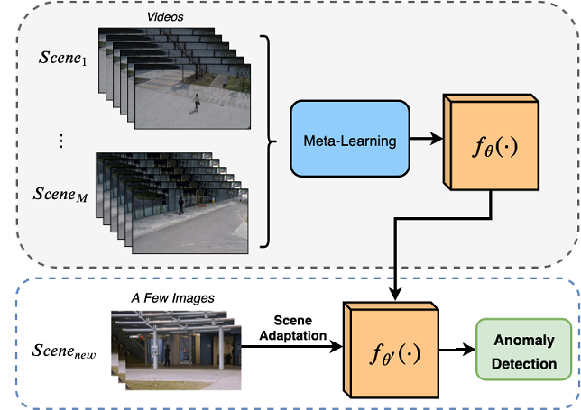
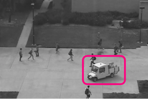

Bio
I am a fifth-year electrical engineering student at the University of Manitoba with an interest in pursuing graduate studies in the field of machine learning, deep learning and it's applications.
Research Interests
Machine Learning, Deep Learning, Generative Networks, Computer Vision, Few-Shot Learning, Anomaly Detection
Education
University of Manitoba
2015 - 2020
B.Sc. in Electrical Engineering
President Scholar, Dean's Honor List
Research Projects

Few-Shot Scene Adaptive Anomaly Detection [2019]
Under Review

Anomaly Detection Using Generative Sequential Models [2019]
In Progress
Interests
In my free time I also like talking photos of my surroundings, some of my pictures can be found here